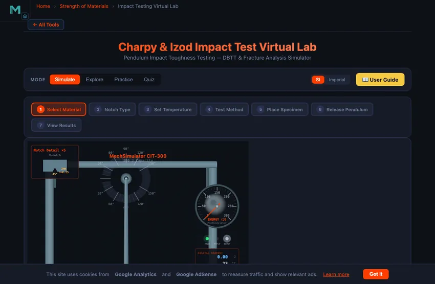

Charpy & Izod Impact Test Virtual Lab
Pendulum Impact Toughness Testing — DBTT & Fracture Analysis Simulator
Display Controls
Σ Live equations — values substituted from the current test
💡 What-if coach — what the current settings mean
📈 Test history — points collected for the DBTT curve
1 Overview
This Impact Testing Simulator lets you perform virtual Charpy and Izod pendulum impact tests on seven built-in materials (plus custom materials you define) at temperatures from −196 to +200°C. Impact testing measures how much energy a material absorbs during rapid fracture. The pendulum swings down, strikes a notched specimen, and the energy absorbed is calculated from the difference in swing angles.
The simulator reproduces the full testing sequence with animated pendulum motion, an impact sound effect on fracture, and real-time results. A built-in SI / Imperial unit toggle switches between J and ft·lbf, °C and °F instantly. After testing, export results as CSV or save the graph as PNG (with watermark). Choose "+ Define custom material…" at the bottom of the Material dropdown to add your own material with custom DBTT and energy properties.
The machine modelled here is a standard ISO 148-1 300 J pendulum: a 20.5 kg hammer on an 0.8 m arm, latched at 150°, striking at 5.41 m/s. Below the machine the classical equation E = mgR(cos β − cos α) is drawn directly on the canvas, and its output counts up as the pendulum follows through so you can watch the measurement happen. Below the results you will find three learning panels — Live equations (rendered in proper mathematical notation), a What-if coach, and a Test history table.
2 Setting Up the Test
The simulator opens in Simulate mode with the pendulum machine on the left and the graph on the right. Below the graph you will find the Control Panel (Place, Release, Reset, the Charpy/Izod and SI/Imperial toggles, and a single Export Results menu) and the controls panel below it (material, notch type, preset, specimen size, notch condition, release angle and temperature).
To run your first test: (1) Pick a material from the dropdown — or choose "+ Define custom material…" to add your own. (2) Choose a notch type. (3) Set the temperature. (4) Select Charpy or Izod from the action bar. (5) Click "Place" to position the specimen. (6) Click "Release" to start the test. You will hear an impact sound when the hammer strikes.
Presets: the fastest way in. Pick one from the Preset dropdown and it loads a complete teaching scenario — Liberty Ship @ 0°C (the historic brittle-fracture case), Pipeline spec −40°C, Upper shelf @ 100°C, Cryogenic 304 @ −196°C, Gray cast iron @ 23°C, U-notch comparison and Izod, mild steel @ 23°C. Changing any control by hand returns the dropdown to “Choose a scenario…”, so it never claims a preset is loaded once you have edited something.
Compact controls. Material, notch and preset are dropdowns rather than button rows, so the whole panel is two lines. The notch dropdown states each geometry inline (depth and root radius), and the last material entry, “+ Define custom material…”, opens the custom-material form rather than selecting anything.
Release angle α — and why β has no control. α is the angle the pendulum is raised to before release, measured from hanging vertical. You set it, and it fixes two things at once: the energy the machine stores, Ecap = mgR(1 − cos α), and the speed it strikes at, v = √(2gR(1 − cos α)). The caption beside the slider shows both live and warns when the striking velocity leaves the 5.0–5.5 m/s window ISO 148-1 requires — at the standard 150° latch this machine gives 5.41 m/s and 300 J.
β is deliberately not settable. It is the angle the pendulum swings through after breaking the specimen — the quantity the machine measures. The whole test solves E = mgR(cos β − cos α) for the absorbed energy using the observed β, so a slider on β would be a slider on the answer. The badges label them accordingly: α (set), β (measured).
Lower α and the capacity falls with it. Drop to 120° and the machine holds only 241 J, so a tough specimen that was comfortably valid at 150° can breach the ASTM E23 80 %-of-capacity rule — a quick way to see why capacity selection matters.
Temperature: drag the slider for a sweep, or type an exact value into the number box beside it and press Enter. The [−] and [+] buttons step one degree at a time. The box shows °C or °F depending on the unit toggle and converts your typed value back automatically.
Specimen size. ASTM E23 defines standard sub-size Charpy specimens for when the stock is too thin for a full bar — thin plate, tube wall, weld heat-affected zone, small forgings. Only the struck thickness is reduced (10, 7.5, 6.7, 5, 3.3 or 2.5 mm); the length and the 10 mm notched face stay full size. Absorbed energy scales with the remaining ligament area, so a ½-size bar reads about half the energy of a full-size one on the same material — but impact toughness in J/cm² is unchanged, because that is energy per unit area. Run the same steel at full and ½ size and watch the Joules halve while the J/cm² stays put; that contrast is the whole point.
Acceptance criteria scale with the specimen. A ⅔-size bar is held to ⅔ of the full-size requirement. Applying a flat “27 J minimum” to a sub-size result is the single most common error in Charpy acceptance testing; the inference panel does the scaling for you and says so.
Notch condition. ASTM E23 holds the V-notch root radius to 0.25 ± 0.025 mm and the depth to 2 ± 0.025 mm. Select Blunt root or Shallow notch to see what a badly machined specimen does: the reading goes up, not down. That is the dangerous direction — a poorly prepared notch makes a steel look safer than it is, which is why notch geometry is checked on an optical comparator and why an out-of-tolerance notch invalidates the test rather than being corrected for.
Display Controls: the collapsible panel pinned to the top-left of the graph canvas decides what is drawn. Ten switches in two groups — Machine: energy equation, notch detail inset, dial gauge, digital readout, protractor & angles, safety guard zone, fracture surface inset; Graph: grid, shelf lines & DBTT, test points. Reset Display turns everything back on. Collapse the panel to keep the canvas clear; strip layers away when projecting to a class, then add them back to reveal how the reading was built up.
Unit Toggle: Click "SI" or "Imperial" in the Control Panel, beside the Charpy/Izod toggle. All values — energy (J / ft·lbf), temperature (°C / °F), velocity (m/s / ft/s), the learning panels, and exported data — update instantly.
Right-click the graph canvas for quick access to Save PNG, Export CSV, or Reset.
3 Running the Test
How the specimen is supported. In Charpy the bar lies across two anvils whose inner faces set the 40 mm span — that span is the dimension called out on the canvas, measured between those faces. Each anvil has a 1 mm radius on its striking edge and is relieved outward behind it, and small back stops locate the bar fore and aft. The gap between the anvils is deliberately open: it is the space the specimen bends into and that the striker passes through, and it is where the notch sits. A 55 mm bar on a 40 mm span overhangs 7.5 mm each side, which is what you see.
Which face gets struck. Watch the specimen closely — the two methods are not just different fixtures. In Charpy the bar lies across two anvils and the notch is cut into the bottom face, so the hammer strikes the face opposite the notch and the notch sits on the tension side where the crack opens. In Izod the bar is clamped upright in a vice and the notch faces towards the incoming hammer, level with the top of the vice jaws, so the notched face is the struck face. The magnified "Notch Detail" inset states which arrangement is active.
The left canvas shows the pendulum machine with animated swing motion. Watch the pendulum descend, strike the specimen at the bottom of its arc, and continue swinging to a reduced height. The specimen fractures on impact, and the fracture surface appearance changes with temperature: fibrous and shear-type at high temperatures (ductile), granular and bright at low temperatures (brittle), and a mix in the transition zone.
The right canvas displays the energy graph and builds a DBTT curve as you test at different temperatures. Graph badges show absorbed energy (J), impact velocity (m/s), initial angle, and final angle in real time. The results row reveals eight values: absorbed energy, impact toughness (J/cm squared), initial and final angles, impact velocity, percent shear fracture, lateral expansion, and fracture type classification. Try testing the same material at several temperatures (e.g., -100, -50, 0, +23, +100) to map out the full transition curve.
Validity check. Under the results a coloured note applies the ASTM E23 rule that a quantitative result must fall below roughly 80 percent of the machine's capacity — 240 J on this 300 J pendulum. Green means the value is usable; amber means friction and vibration losses are no longer negligible; red means the pendulum ran out of energy and the specimen did not separate, which must be reported as "did not break" rather than as a number.
Two graphs, and you choose. The Graph selector above the badges switches between Pendulum Swing and the DBTT Curve. Pendulum Swing plots the real angle against time in seconds — it is integrated from the pendulum equation, so the marked impact time and the follow-through angle are genuine, not decorative. The DBTT Curve plots absorbed energy against temperature and gains a point with every test. The view switches to the DBTT curve automatically once the hammer has passed through (the caption tells you when it did that), and you can switch back at any time.
Inference panel. Directly under the two canvases, "What This Result Tells You" reads the completed test back in plain language: what the energy figure means, what the fracture surface would look like in the hand, where the temperature sits relative to the DBTT, whether the value can be checked against code minima, and which temperature to test next. It also warns when a U-notch, keyhole or Izod reading is being compared against acceptance criteria that are written for Charpy V-notch.
Learning panels. Expand Live equations to see the impact velocity, the energy balance and the toughness division typeset with your current values substituted in. The What-if coach reads the current material, temperature, notch and method and explains what they mean — whether you are on the lower shelf, in the scatter-prone transition zone or on the upper shelf, how the notch geometry is affecting the reading, and whether the expected energy clears typical ASME and pipeline code minima. Test history tabulates every point plotted on the DBTT curve and can clear them.
4 Reading the Theory
Switch to Explore mode to study impact testing concepts in depth. Topics are organized into categories covering test methods, specimen geometry, energy calculations, DBTT theory, fracture surface analysis, and standards (ASTM E23, ISO 148). Each concept card includes a description, relevant formula, and a worked example with numerical values.
Key topics include the energy formula E = mgR(cos beta - cos alpha), the difference between Charpy (simply supported beam, struck opposite notch) and Izod (cantilever, struck same side as notch), V-notch vs. U-notch vs. keyhole geometry, and why BCC metals show a DBTT while FCC metals do not. The annotated canvas diagram updates with each selected concept.
5 Try a Problem
Practice mode presents random calculation problems about impact testing. You might need to calculate absorbed energy from pendulum angles, determine impact toughness from energy and specimen cross-section, or convert between different units. Enter your answer, check it, and view the step-by-step solution if needed. Your running score is tracked.
Quiz mode runs five questions per session covering theory (Charpy vs. Izod differences, DBTT concepts, notch effects) and numerical calculations. Answer all five, review your results, and take a new quiz to improve your score. Aim for a perfect 5/5 before moving on.
6 Lab Tips & Validity
- Start with mild steel at room temperature (23 degrees C) to see a typical ductile fracture with high energy absorption.
- Then test the same material at -100 degrees C to observe the dramatic drop in absorbed energy as it transitions to brittle behavior.
- Compare BCC metals (mild steel, low-alloy steel) with FCC metals (aluminum, copper) to see that FCC metals remain ductile at cryogenic temperatures.
- The V-notch is the standard for most testing. Load the U-notch comparison preset and run it against a V-notch test on the same steel: the blunter 1 mm root relieves crack-tip constraint, so a ductile specimen absorbs roughly 50 percent more energy. Repeat the comparison at -100 degrees C and the advantage almost vanishes, because cleavage fracture barely cares how sharp the notch is.
- Run the Izod, mild steel preset straight after the Charpy test at the same temperature. Izod reads about 20 percent lower for the same material because the specimen is a clamped cantilever struck on the notched face. Never quote an Izod figure against a Charpy specification.
- Pay attention to the percent shear fracture value; it quantifies how much of the fracture surface is ductile vs. brittle.
- Use the temperature slider to collect at least five data points and observe how the DBTT curve builds on the graph canvas.
- In Practice mode, remember the key formula: E = mgR(cos beta - cos alpha). Most problems are variations of this equation.
- Keyboard shortcuts: 1–4 switch modes, Space place or release, R reset.
- Toggle to Imperial to see energy in ft·lbf and temperature in °F — useful for ASTM E23 standards used in the US.
- Choose "+ Define custom material…" from the Material dropdown to add your own material with custom energy, DBTT, upper/lower shelf energy, and density. The unit-aware form adjusts labels for SI or Imperial.
- After a test, open Export Results in the Control Panel. CSV data gives the result plus every DBTT point collected, Graph PNG saves the current chart with a mechsimulator.com watermark, and Test report opens a printable certificate.
- Right-click the graph canvas for quick export and reset options.
- Run the same specimen at α = 150° and again at 120°. The absorbed energy barely changes — it is a property of the material — but β and the validity verdict both move, because the machine now stores far less energy.
- Run mild steel full-size, then at ½ size. The Joules halve but the J/cm² toughness is identical — energy depends on how much material you broke, toughness is the material property.
- Set Blunt root and re-run: the energy rises by about 20 % on a ductile specimen. A notch error flatters the material, which is why it invalidates the test rather than merely adding scatter.
- Use the presets row to jump straight to a teaching scenario, then nudge the temperature stepper by one degree at a time to find exactly where the transition begins.
- If the validity note turns amber or red, the number is not usable as reported data — that is the same judgement a real test house makes before signing a certificate.
- Open Display Controls on the graph canvas and switch off the dial, digital readout and protractor to leave a clean machine diagram for a worksheet screenshot — then Reset Display to bring everything back.
How Does the Charpy & Izod Impact Test Work?

The Charpy and Izod impact tests measure how much energy a material absorbs while fracturing. A weighted pendulum is released from a set angle, breaks a notched specimen at the bottom of its swing, and the height it carries through to gives the absorbed energy as E = mgR(cos β − cos α), reported in joules.
Working through that equation: raising the pendulum to the release angle α stores a known potential energy. On release it swings down and strikes the specimen at the bottom of its arc, where the specimen fractures and takes some of that energy out of the system. The pendulum therefore rises to a smaller follow-through angle β on the far side, and the difference between the two heights — multiplied by mg, with m the pendulum mass and R its arm length — is exactly the energy the fracture consumed.
The key difference between the two methods lies in specimen orientation. In the Charpy test (ASTM E23, ISO 148), the specimen is supported as a simply supported beam and struck on the face opposite the notch. In the Izod test (ASTM E23, ISO 180), the specimen is clamped vertically as a cantilever and struck on the same side as the notch, above the clamp. Both methods yield absorbed energy values in Joules (J), which can be converted to impact toughness by dividing by the cross-sectional area at the notch.
Understanding the Ductile-Brittle Transition Temperature (DBTT)
Many metals, particularly those with body-centered cubic (BCC) crystal structures like carbon steel and low-alloy steels, undergo a dramatic change in fracture behavior as temperature decreases. At high temperatures, they fracture in a ductile manner with significant energy absorption, producing a fibrous, shear-type fracture surface. At low temperatures, the same material fractures in a brittle, cleavage mode with very little energy absorption, producing a bright, granular fracture surface. The temperature range over which this transition occurs is called the ductile-brittle transition temperature (DBTT), and it appears as a sigmoid curve when absorbed energy is plotted against temperature. Face-centered cubic (FCC) metals like aluminum and copper do not exhibit this transition and remain ductile even at cryogenic temperatures, making them suitable for low-temperature applications.
Specimen Preparation and Notch Types
Standard Charpy specimens are 10 mm × 10 mm × 55 mm bars with a machined notch at the midpoint, supported on anvils 40 mm apart. Where the stock is too thin for a full bar, ASTM E23 sub-size specimens reduce the struck thickness — see the section on sub-size specimens below, because the acceptance criteria must be scaled with them. Three notch geometries are commonly used: the V-notch (2 mm deep, 45° included angle, 0.25 mm root radius) specified in ASTM E23 and ISO 148-1, the U-notch (5 mm deep, 1 mm root radius) used in some European standards, and the keyhole notch (ASTM E23 Type C: 5 mm deep, ending in a 1.6 mm diameter drilled hole, so the root radius is 0.8 mm) used for certain cast irons and polymers. The V-notch is the most widely used because it provides the sharpest stress concentration and greatest sensitivity to material toughness differences. Precise machining of the notch is critical, as variations in notch depth, angle, or root radius directly affect the measured impact energy.
The Liberty Ship Lesson — Why Impact Testing Exists
During World War II, 2700 Liberty Ships were built as fast as possible by welding (rather than the traditional riveting) plate steel together. By 1946, almost 1500 of them had developed serious cracks; nearly 200 had broken catastrophically — some snapping completely in half in calm sea. The investigation pointed to a single cause: ordinary low-carbon steel, which behaved ductile at room temperature, became brittle below about 5 °C. North Atlantic winter convoys regularly saw water temperatures of 0−4 °C. The steel was simply too brittle at service temperature.
Before the Liberty Ships, impact testing was a research curiosity. After them, it became mandatory for every structural steel destined for cold-temperature service. The Charpy V-notch test at the lowest expected operating temperature is now written into ASTM A20, A516, A537 and dozens of other pressure-vessel and shipbuilding standards. The story is repeated in every materials-engineering course because the lesson is stark: a property you do not measure cannot save you from a failure you did not predict.
The Ductile-Brittle Transition — What the Numbers Mean in Service
Take mild steel: at 20 °C it absorbs about 40−60 J in a Charpy test. At −40 °C it might absorb 5 J. Same metal, ten times less toughness. The transition is sigmoid: a gentle decline from high temperature to about the “mid-transition” temperature, then a rapid fall over 20−40 °C, then a low brittle shelf at low temperatures.
Engineering codes set thresholds. ASME pressure-vessel code requires steel to absorb a minimum of 18 J at the lowest service temperature; pipeline codes for sub-Arctic service require 40 J at −30 °C. Specifying the wrong steel for a cold-temperature application is the most common materials-engineering error and the easiest to avoid with Charpy data.
Why Does the Notch Type Change the Result?
The notch is not just a place for the crack to start — it controls the stress state ahead of the crack tip. A sharp V-notch with a 0.25 mm root radius creates severe triaxial constraint: the material at the root cannot contract laterally, so it reaches its fracture stress before much plastic work has been done. Blunt the root to the 1 mm radius of an ISO 148 U-notch and that constraint relaxes; the same steel now yields over a larger volume and absorbs noticeably more energy, typically around 50 percent more for a fully ductile specimen. This is why a Charpy value is meaningless without stating the notch type — KV and KU are different measurements, not different units for the same thing.
The effect is strongly ductility-dependent. On the upper shelf, where fracture is fibrous and driven by void growth, notch acuity dominates the answer. Down on the lower shelf, where fracture is cleavage on {100} planes, the crack propagates at low energy regardless of how the notch was cut, and the gap between V-notch and U-notch results largely closes. Running the same material at 20 °C and again at −100 °C with both notch types makes this collapse obvious in a way no table of numbers does.
Sub-Size Specimens and Scaled Acceptance Criteria
A full-size Charpy bar is 10 × 10 × 55 mm, but plenty of real material is never that thick. Thin plate, tube wall, the heat-affected zone of a weld and small forgings all force the use of ASTM E23 sub-size specimens, in which the struck thickness is reduced to 7.5, 6.7, 5, 3.3 or 2.5 mm while the length and the notched face stay full size. Because the pendulum only has to break the remaining ligament, absorbed energy falls roughly in proportion to the ligament area: a half-size specimen of the same steel at the same temperature absorbs about half the Joules.
The critical consequence is that acceptance criteria must be scaled by the same ratio. A two-thirds size specimen is held to two-thirds of the full-size requirement, so a 27 J minimum becomes 18 J. Comparing a sub-size result directly against a full-size specification is the most common error in Charpy acceptance testing. Note that impact toughness expressed in J/cm² is unaffected by specimen size, because it is already normalised by the fracture area — which is precisely why it is the more portable quantity.
Why Notch Preparation Invalidates a Test
ASTM E23 controls the V-notch root radius to 0.25 ± 0.025 mm and the notch depth to 2 ± 0.025 mm, tolerances tight enough that notches are inspected on an optical comparator. The reason is not fussiness about repeatability. A notch that is blunter or shallower than specified relieves constraint at the crack tip or leaves extra ligament to break, and in both cases the specimen absorbs more energy than a correctly machined one would. The error therefore biases the result high, making the material appear tougher and the component safer than it really is.
Because the bias runs in the unsafe direction and cannot be reliably corrected after the fact, an out-of-tolerance notch invalidates the result outright rather than contributing an uncertainty band. This is one of the few places in mechanical testing where a preparation fault is treated as disqualifying rather than as scatter.
Machine Capacity and Result Validity
The energy a machine can deliver is fixed by its pendulum: Ecap = mgR(1 − cos α), where α is the release angle. Raising or lowering α changes the stored energy and the striking velocity together, which is why ISO 148-1 constrains the striking velocity to 5.0–5.5 m/s rather than leaving the release angle free.
A pendulum impact machine is only accurate over part of its range. ASTM E23 and ISO 148-1 both warn that as the absorbed energy approaches the machine's rated capacity, the pendulum slows so much on follow-through that windage, bearing friction and specimen-toss losses stop being negligible fractions of the reading. The practical rule is that a result should fall below roughly 80 percent of capacity — below about 240 J on the standard 300 J machine. A tough austenitic stainless measured on a small machine will read low, and the error is systematic rather than random.
The opposite failure is a specimen that never separates. If the material demands more energy than the pendulum carries, the hammer simply drags the bent specimen through the anvils and the dial reads full capacity. That is not a toughness value; ASTM E23 requires it to be reported as “did not break” and the test repeated on a higher-capacity machine. Both conditions are flagged in this simulator so that reading the number is never separated from judging whether the number is admissible.
References for Impact Testing
- ASTM E23-18 — Standard Test Methods for Notched Bar Impact Testing of Metallic Materials.
- ISO 148-1:2016 — Metallic materials — Charpy pendulum impact test.
- ASTM A370 — Standard Test Methods and Definitions for Mechanical Testing of Steel Products.
- Anderson, T. L. — Fracture Mechanics: Fundamentals and Applications, 4th ed.
Charpy Impact Test — Key Formulas
| Parameter | Formula | Description |
|---|---|---|
| Absorbed Energy | E = m × g × (h1 − h2) | Energy absorbed by specimen fracture (J) |
| Initial Height | h1 = R(1 − cos α) | Pendulum release height from swing angle α |
| Final Height | h2 = R(1 − cos β) | Pendulum follow-through height after fracture |
| Impact Toughness | K = E / Alig | Absorbed energy per unit remaining ligament area (J/cm²) |
| Ligament Area | Alig = B × (W − a) | Breadth × (height − notch depth); 0.8 cm² for a 2 mm V-notch |
| Impact Velocity | v = √(2gR(1 − cos α)) | Striker speed at the bottom of the arc (5.41 m/s at α = 150°) |
| Validity Limit | E < 0.8 Ecapacity | ASTM E23 working range — 240 J on a 300 J machine |
Notch Geometry Comparison
| Notch | Standard | Depth / Root Radius | Ligament | Relative Ductile Energy |
|---|---|---|---|---|
| V-notch | ASTM E23 Type A, ISO 148-1 | 2 mm / 0.25 mm, 45° | 0.80 cm² | 1.00 (reference) |
| U-notch | ISO 148-1 Type B | 5 mm / 1.0 mm | 0.50 cm² | ≈ 1.50 |
| Keyhole | ASTM E23 Type C | 5 mm / 0.8 mm (1.6 mm hole) | 0.50 cm² | ≈ 1.25 |
Typical Charpy V-Notch Impact Energies (at 20 °C)
| Material | Impact Energy (J) | Fracture Type |
|---|---|---|
| Mild Steel (AISI 1018) | 100 – 150 | Ductile (cup-cone) |
| Stainless Steel (304) | 150 – 200 | Ductile |
| Aluminium 6061-T6 | 20 – 30 | Ductile |
| Cast Iron (grey) | 3 – 8 | Brittle (granular) |
| Tool Steel (D2) | 12 – 20 | Brittle to semi-brittle |
| Brass (C26000) | 40 – 60 | Ductile |
| Nylon 6/6 | 50 – 80 | Ductile |
Explore Related Simulators
If you found this Impact Testing simulator helpful, explore our Fatigue Testing simulator, Hardness Testing simulator, Universal Testing Machine simulator, and Stress–Strain Curve simulator for more hands-on practice. The same notch sensitivity that lowers impact energy also raises the minimum safe bend radius — see the Sheet Metal Bend Radius Calculator. For the physics behind the pendulum itself — momentum, restitution and impulse — see the Collision & Momentum simulator.